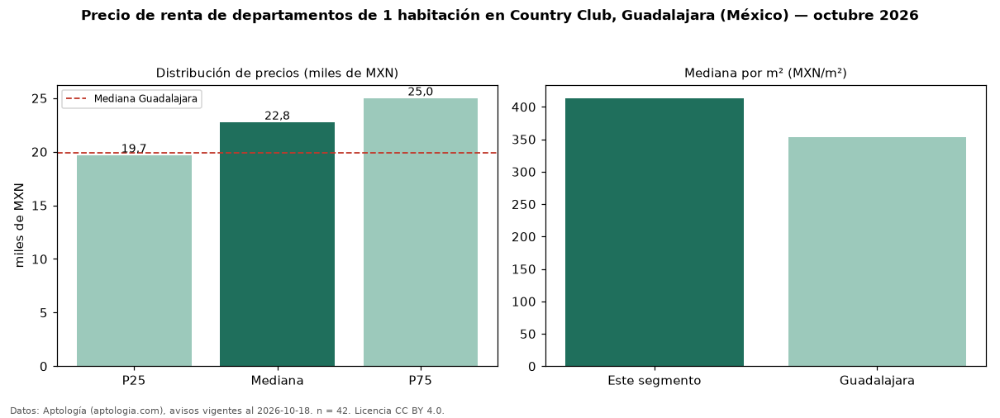

Precio de renta de departamentos de 1 habitación en Country Club, Guadalajara (México) — octubre 2026
En Country Club, Guadalajara (México), la mediana de canon mensual de departamentos de 1 habitación es MXN 22.750, según 42 avisos vigentes. Frente a la mediana de Guadalajara para departamentos de 1 habitación (MXN 19.900), queda 14 % por encima. Por metro cuadrado, la mediana es MXN 413/m² al mes (n = 39 avisos con área), 17 % por encima de Guadalajara (MXN 353/m²). Son 37 % de los 115 avisos de departamentos en renta de la zona, cuya mediana general es MXN 27.000 (−16 %). El área mediana anunciada es 51 m². La mitad central de los avisos va de MXN 19.690 a MXN 25.000 (razón 1,3), una dispersión baja. Datos: Aptología (aptologia.com), CC BY 4.0 — https://www.aptologia.com/. Archivos: PDF, CSV con las cifras y gráfica PNG.

| Avisos únicos | 42 |
|---|---|
| Percentil 25 | COP 19.689 |
| Mediana | COP 22.750 |
| Percentil 75 | COP 25.000 |
| Mediana por m² | COP 413 |
Fuente: avisos vigentes de portales inmobiliarios recopilados por Aptología, deduplicados (mínimo 30 avisos únicos por celda). Precios pedidos, no cerrados. Fecha: 2026-10-18.